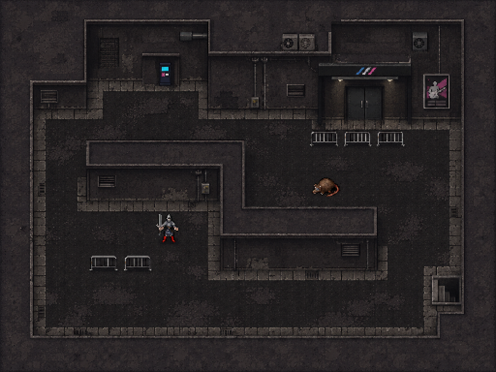

현대 공연장 거리의 소재와 돌죽 같은 도트 밀도·명도를 함께 맞추는 시안입니다. 타일을 따로 제작하기 전에 화면 전체의 질감과 색조부터 확인합니다.

이미지 생성 도구로 만든 장면 컨셉입니다. 실제32×32 타일 세트로 분리하거나 엔진에 적용한 결과가 아닙니다. 생성 이미지 속 배치·캐릭터는 분위기와 크기 참고용입니다.
01: 매끈한 블록 벽·밝은 보도·별개 소품 때문에 짜깁기처럼 느껴짐.
02: 원본 돌죽 석조 배경을 너무 그대로 사용.
03: 현대 소재를 유지하고 거친 픽셀 질감·연결된 벽·절제된 명도로 통일.